Chapter 3 Sampling the Imaginary
3.1 Solutions to Exercises
3.1.0.1 Initialization code for easy exercises
3E1
How much posterior probability lies below p = 0.2?
ggplot(data=NULL, aes(x=samples)) +
geom_histogram(bins=50) +
geom_vline(xintercept = 0.2, color="red") +
labs(subtitle = glue::glue("p below 0.2: {mean(samples < 0.2)}"))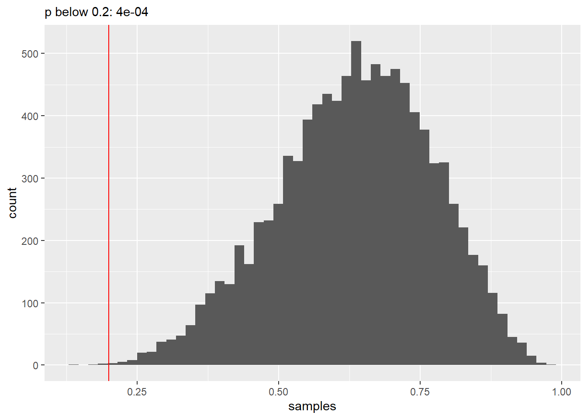
3E2
How much posterior probability lies below p = 0.8?
ggplot(data=NULL, aes(x=samples)) +
geom_histogram(bins=50) +
geom_vline(xintercept = 0.8, color="red") +
labs(subtitle = glue::glue("p below 0.8: {mean(samples < 0.8)}"))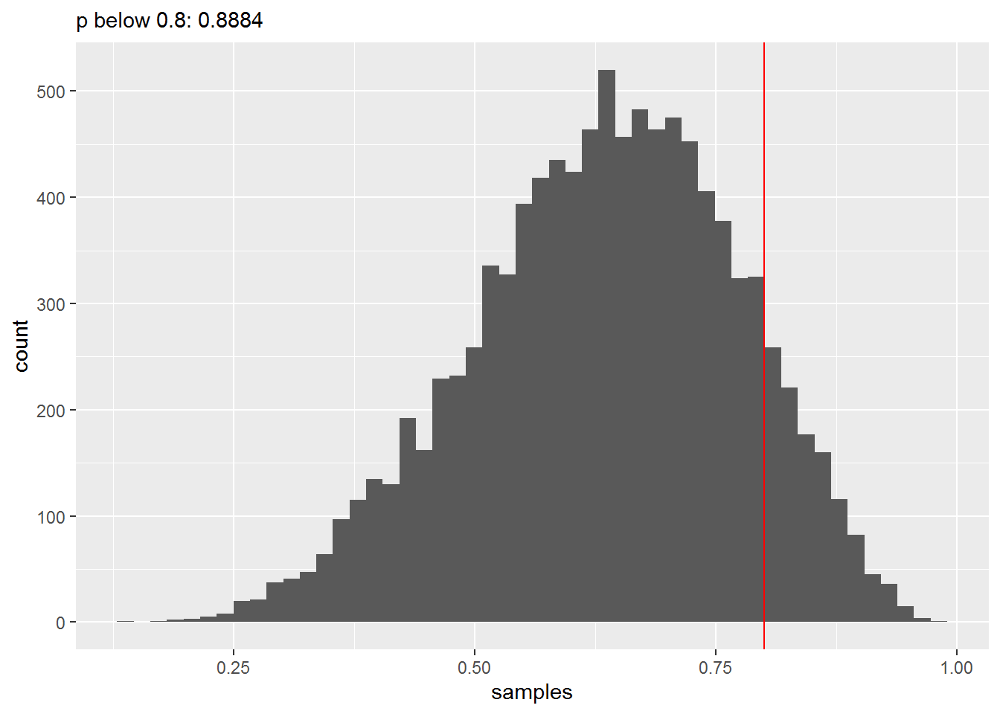
3E3
How much posterior probability lies between p = 0.2 and p = 0.8?
ggplot(data=NULL, aes(x=samples)) +
geom_histogram(bins=50) +
geom_vline(xintercept = c(0.2, 0.8), color="red") +
labs(subtitle = glue::glue("p between 0.2 and 0.8: {mean(samples < 0.8 & samples > 0.2)}"))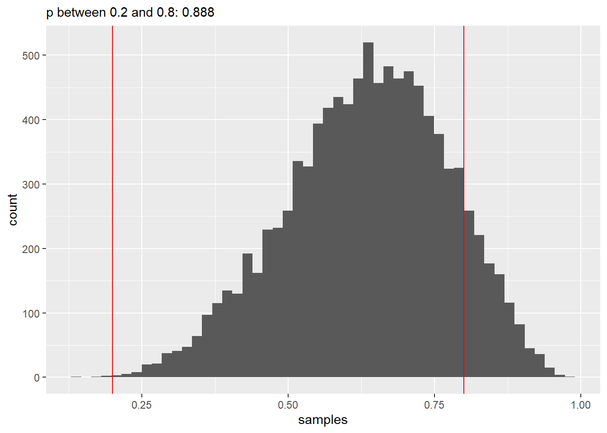
3E4
20% of the posterior probability lies below which value of p?
q20 <- quantile(samples, 0.2)
ggplot(data=NULL, aes(x=samples)) +
geom_histogram(bins=50) +
geom_vline(xintercept = q20, color="red") +
labs(subtitle = glue::glue("20% of the posterior probability lies below {round(q20, 2)}"))
3E5
20% of the posterior probability lies above which value of p?
q80 <- quantile(samples, 0.8)
ggplot(data=NULL, aes(x=samples)) +
geom_histogram(bins=50) +
geom_vline(xintercept = q80, color="red") +
labs(subtitle = glue::glue("20% of the posterior probability lies above {round(q80, 2)}"))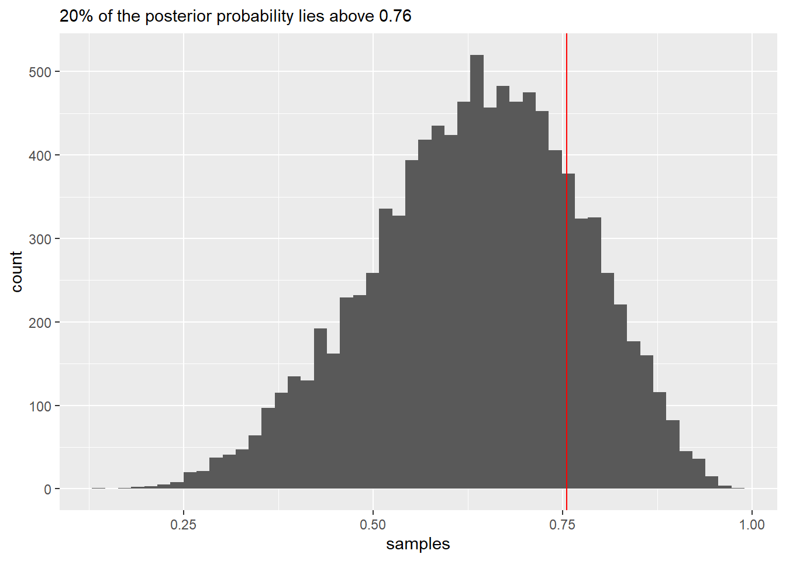
3E6
Which values of p contain the narrowest interval equal to 66% of the posterior probability?
3E7
Which values of p contain 66% of the posterior probability, assuming equal posterior probability both below and above the interval?
3M1
Suppose the globe tossing data had turned out to be 8 water in 15 tosses. Construct the posterior distribution, using grid approximation. Use the same flat prior as before.
p_grid <- seq(from=0, to=1, length.out=1000)
prior <- rep(1,1000)
likelihood <- dbinom(8, size=15, prob=p_grid)
posterior <- likelihood * prior
posterior <- posterior / sum(posterior)
ggplot(data=NULL, aes(x=p_grid, y=posterior)) +
geom_line() +
labs(subtitle="8 water in 15 tosses")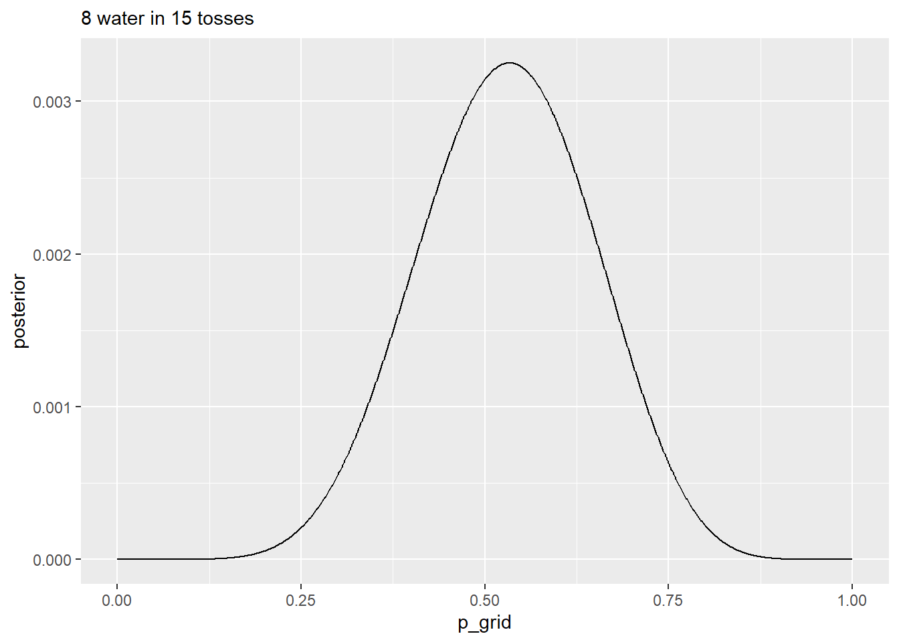
3M2
Draw 10,000 samples from the grid approximation from above. Then use the samples to calculate the 90% HPDI for p.
set.seed(100)
samples <- sample(p_grid, prob=posterior, size=1e4, replace=TRUE)
hpdi90 <- HPDI(samples, 0.9)
ggplot(data=NULL, aes(x=samples)) +
geom_histogram(bins=50) +
geom_vline(xintercept = hpdi90, color="red") +
labs(subtitle = glue::glue("HPDI 90% is {round(hpdi66[1], 3)}..{round(hpdi66[2], 3)}"))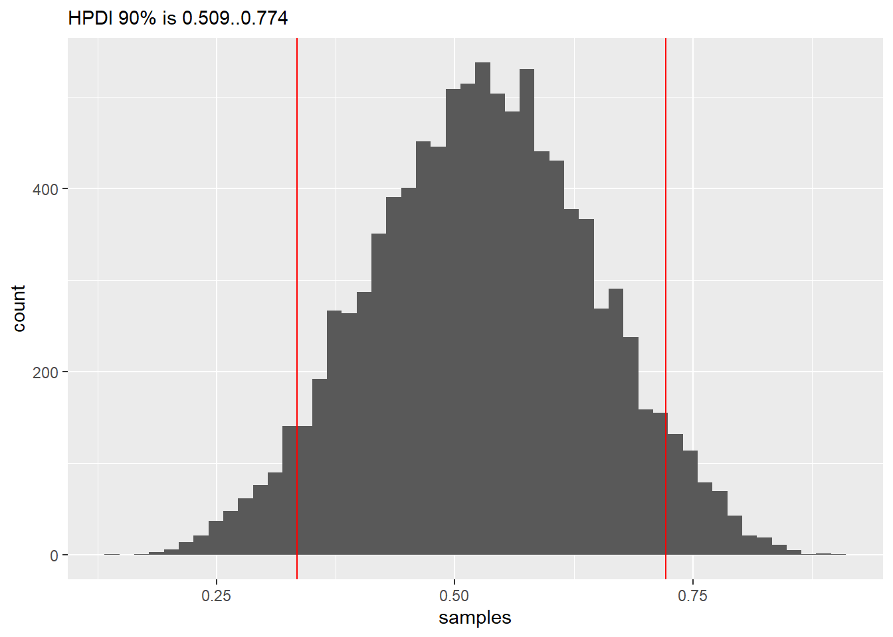
3M3
Construct a posterior predictive check for this model and data. This means simulate the distribution of samples, averaging over the posterior uncertainty in p . What is the probability of observing 8 water in 15 tosses?
predicted_water8_15 <-
tibble(N = rbinom(length(samples), size=15, prob=samples)) %>%
group_by(N) %>%
summarize(count = n(), .groups = 'drop') %>%
ungroup() %>%
mutate(p = count / sum(count))
p8 <-
predicted_water8_15 %>%
filter(N == 8) %>%
pull(p)
ggplot(predicted_water8_15, aes(x=N, y= p)) +
geom_point() +
labs(subtitle = glue::glue("The probability of observing 8 water in 15 tosses is {p8}"))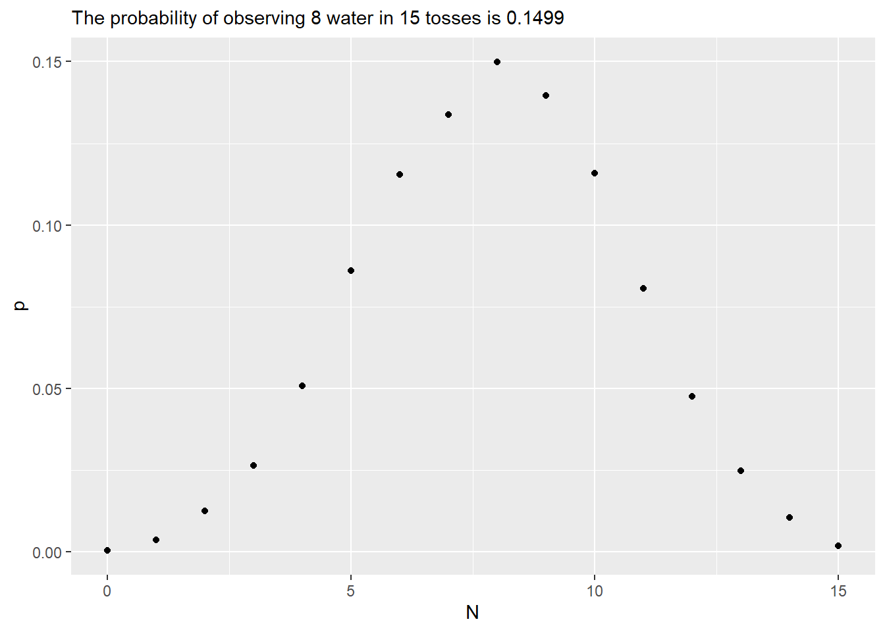 #### 3M4 {-} Using the posterior distribution constructed from the new (8/15) data, now calculate the probability of observing 6 water in 9 tosses.
predicted_water6_9 <-
tibble(N = rbinom(length(samples), size=9, prob=samples)) %>%
group_by(N) %>%
summarize(count = n(), .groups = 'drop') %>%
ungroup() %>%
mutate(p = count / sum(count))
p6 <-
predicted_water6_9 %>%
filter(N == 6) %>%
pull(p)
ggplot(predicted_water6_9, aes(x=N, y= p)) +
geom_point() +
labs(subtitle = glue::glue("The probability of observing 6 water in 9 tosses is {p6}"))
3M5
Start over at 3M1 , but now use a prior that is zero below p = 0.5 and a constant above p = 0.5. This corresponds to prior information that a majority of the Earth’s surface is water. Repeat each problem above and compare the inferences. What difference does the better prior make? If it helps, compare inferences (using both priors) to the true value p = 0.7.
p_grid <- seq(from=0, to=1, length.out=1000)
prior <- as.numeric(p_grid >= 0.5)
likelihood <- dbinom(8, size=15, prob=p_grid)
posterior <- likelihood * prior
posterior <- posterior / sum(posterior)
ggplot(data=NULL, aes(x=p_grid, y=posterior)) +
geom_line() +
labs(subtitle="8 water in 15 tosses")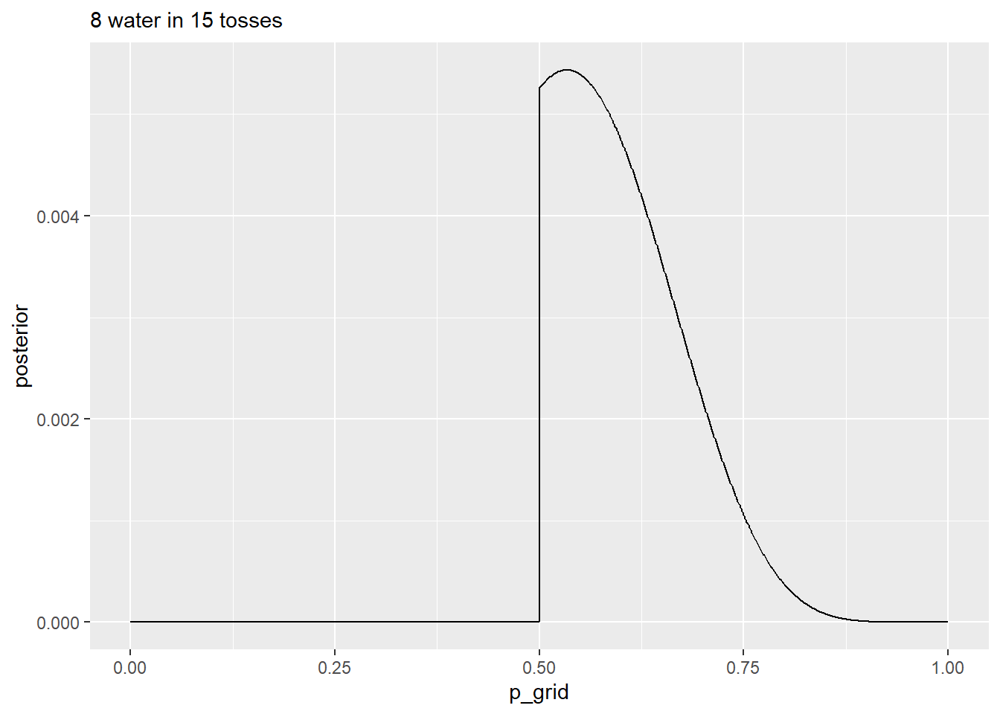
set.seed(100)
samples <- sample(p_grid, prob=posterior, size=1e4, replace=TRUE)
hpdi90 <- HPDI(samples, 0.9)
ggplot(data=NULL, aes(x=samples)) +
geom_histogram(bins=50) +
geom_vline(xintercept = hpdi90, color="red") +
labs(title = "Remake of 3M2",
subtitle = glue::glue("HPDI 90% is {round(hpdi66[1], 3)}..{round(hpdi66[2], 3)}"))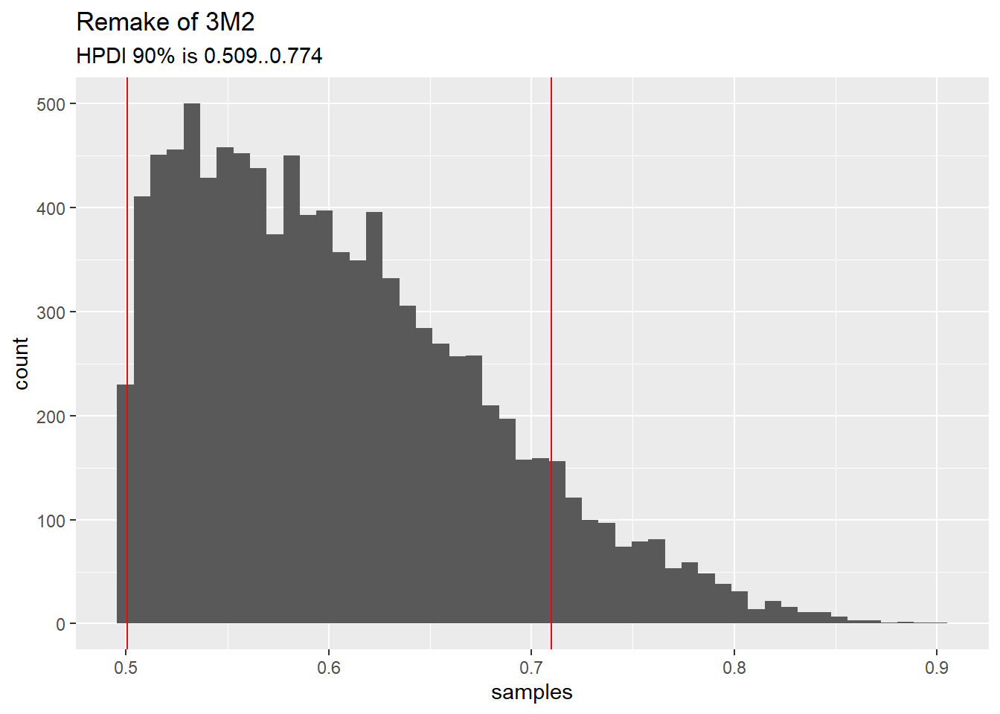
predicted_water8_15_remake <-
tibble(N = rbinom(length(samples), size=15, prob=samples)) %>%
group_by(N) %>%
summarize(count = n(), .groups = 'drop') %>%
ungroup() %>%
mutate(p = count / sum(count))
p8 <-
predicted_water8_15_remake %>%
filter(N == 8) %>%
pull(p)
ggplot(predicted_water8_15_remake, aes(x=N, y= p)) +
geom_point() +
geom_line(data=predicted_water8_15, color="red") +
labs(title = "Remake of 3M3",
subtitle = glue::glue("The probability of observing 8 water in 15 tosses is {p8}"))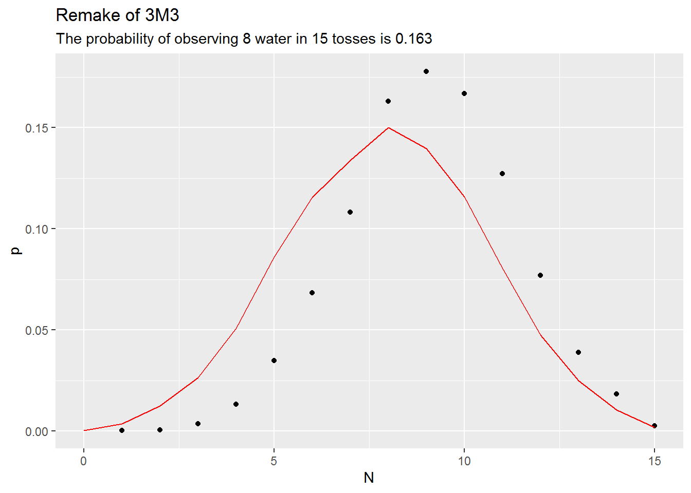
predicted_water6_9_remake <-
tibble(N = rbinom(length(samples), size=9, prob=samples)) %>%
group_by(N) %>%
summarize(count = n(), .groups = 'drop') %>%
ungroup() %>%
mutate(p = count / sum(count))
p6 <-
predicted_water6_9_remake %>%
filter(N == 6) %>%
pull(p)
ggplot(predicted_water6_9_remake, aes(x=N, y= p)) +
geom_point() +
geom_line(data=predicted_water6_9, color="red") +
labs(subtitle = glue::glue("The probability of observing 6 water in 9 tosses is {p6}"))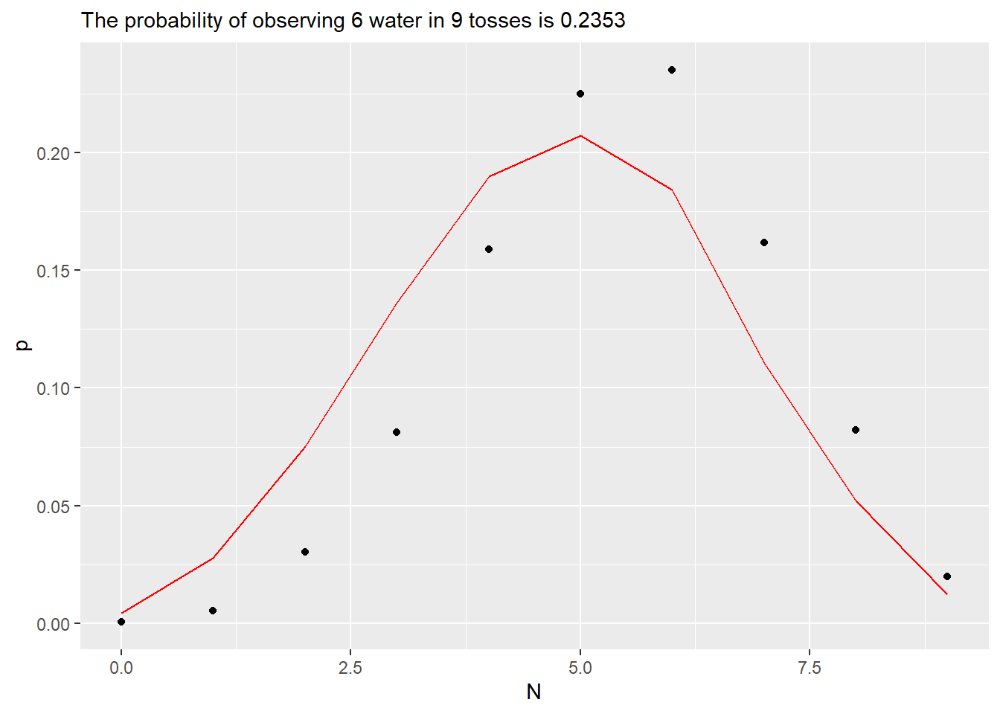
3M6
Suppose you want to estimate the Earth’s proportion of water very precisely. Specifically, you want the 99% percentile interval of the posterior distribution of p to be only 0.05 wide. This means the distance between the upper and lower bound of the interval should be 0.05. How many times will you have to toss the globe to do this?
true_proportion <- 0.5
toss_quantiles <-
tibble(tossesN = seq(10, 3000, by=1)) %>%
mutate(lowerN = qbinom(0.005, tossesN, true_proportion),
upperN = qbinom(0.995, tossesN, true_proportion),
lowerP = lowerN / tossesN,
upperP = upperN / tossesN,
deltaP = upperP - lowerP)
minimal_N <-
toss_quantiles %>%
filter(deltaP < 0.05) %>%
slice(1) %>%
pull(tossesN)
ggplot(toss_quantiles, aes(x=tossesN, y=deltaP)) +
geom_line() +
geom_hline(yintercept = 0.05, color="red") +
scale_y_log10() +
labs(title = "Via qbinom",
subtitle = glue::glue("For proportion {true_proportion} you need {minimal_N} tosses to get 99% PI under 0.05"))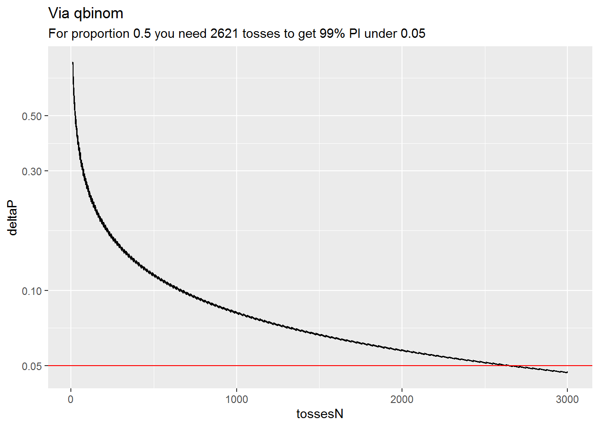
simulate_and_compute_PI99 <- function(tossN, true_proportion){
simulated_N <- rbinom(1e4, tossN, true_proportion)
simulated_P <- simulated_N / tossN
diff(rethinking::PI(simulated_P, prob=0.99))
}
true_proportion <- 0.5
toss_sims <-
tibble(tossesN = seq(10, 3000, by=1)) %>%
rowwise() %>%
mutate(deltaP =simulate_and_compute_PI99(tossesN, true_proportion))
minimal_N <-
toss_sims %>%
filter(deltaP < 0.05) %>%
slice(1) %>%
pull(tossesN)
ggplot(toss_sims, aes(x=tossesN, y=deltaP)) +
geom_line() +
geom_hline(yintercept = 0.05, color="red") +
scale_y_log10() +
labs(title = "Via rbinom simulations",
subtitle = glue::glue("For proportion {true_proportion} you need {minimal_N} tosses to get 99% PI under 0.05"))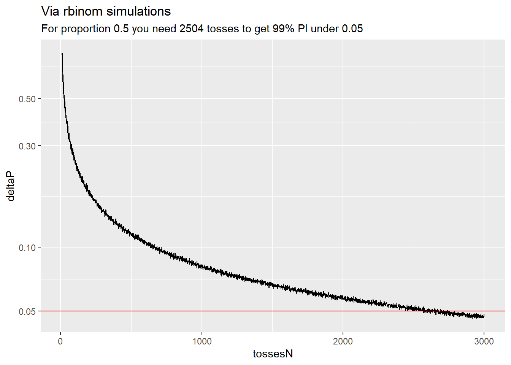
3H1
Using grid approximation, compute the posterior distribution for the probability of a birth being a boy. Assume a uniform prior probability. Which parameter value maximizes the posterior probability?
birth <- c(birth1, birth2)
birthN <- length(birth)
boyN <- sum(birth)
p_grid <- seq(from=0, to=1, length.out=1000)
prior <- rep(1,1000)
likelihood <- dbinom(boyN, size=birthN, prob=p_grid)
posterior <- likelihood * prior
posterior <- posterior / sum(posterior)
boyP <- p_grid[which.max(posterior)]
ggplot(data=NULL, aes(x=p_grid, y=posterior)) +
geom_line()+
geom_vline(xintercept = boyP, color="red") +
labs(subtitle = glue::glue("Mode: {round(boyP, 3)}"))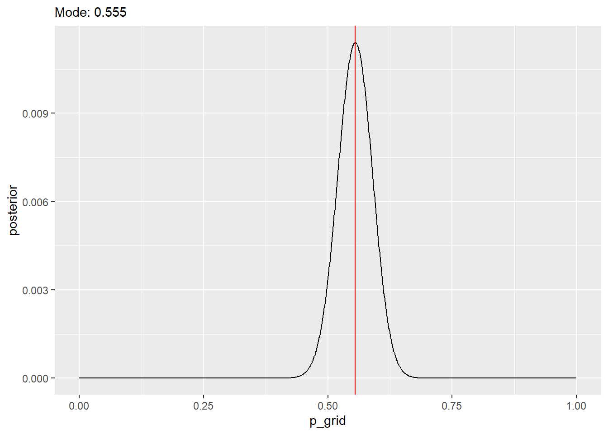
3H2
Using the sample function, draw 10,000 random parameter values from the posterior distribution you calculated above. Use these samples to estimate the 50%, 89%, and 97% highest posterior density intervals.
set.seed(100)
samples <- sample(p_grid, prob=posterior, size=1e4, replace=TRUE)
HPDI50 <- rethinking::HPDI(samples, prob = 0.5)
HPDI89 <- rethinking::HPDI(samples, prob = 0.89)
HPDI97 <- rethinking::HPDI(samples, prob = 0.97)
all_HPDI <- c(HPDI50, HPDI89, HPDI97)
names(all_HPDI) <- NULL
ggplot(data=NULL, aes(x=samples)) +
geom_histogram(bins=40) +
geom_vline(xintercept = HPDI50, color="green") +
geom_vline(xintercept = HPDI89, color="blue") +
geom_vline(xintercept = HPDI97, color="red") +
scale_x_continuous(breaks = all_HPDI, labels = round(all_HPDI, 3))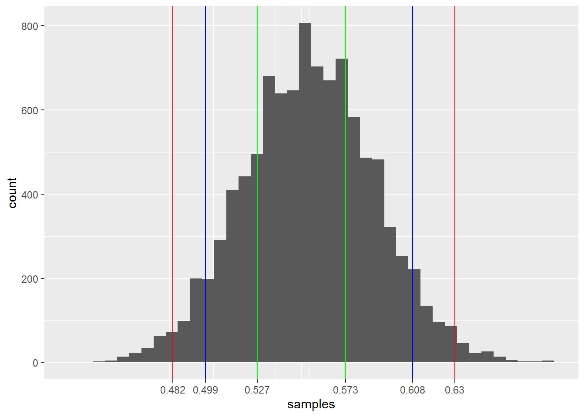
3H3
Use rbinom to simulate 10,000 replicates of 200 births. You should end up with 10,000 numbers, each one a count of boys out of 200 births. Compare the distribution of predicted numbers of boys to the actual count in the data (111 boys out of 200 births). There are many good ways to visualize the simulations, but the dens command (part of the rethinking package) is probably the easiest way in this case. Does it look like the model fits the data well? That is, does the distribution of predictions include the actual observation as a central, likely outcome?
sim_boys <- rbinom(1e4, 200, boyN / birthN)
ggplot(data=NULL, aes(x=sim_boys)) +
geom_density() +
geom_vline(xintercept = boyN, color="red")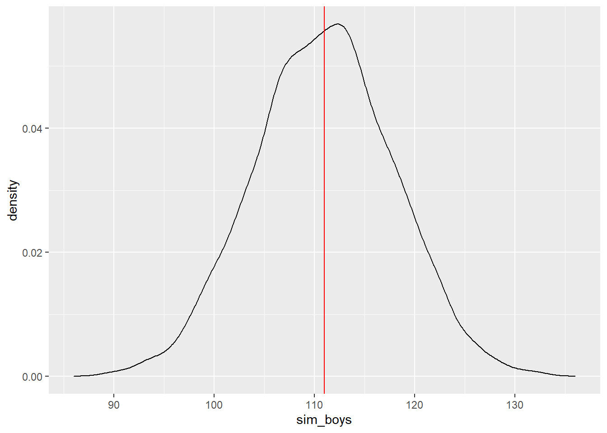
3H4
Now compare 10,000 counts of boys from 100 simulated first borns only to the number of boys in the first births, birth1. How does the model look in this light?
sim_boys <- rbinom(1e4, 100, boyN / birthN)
ggplot(data=NULL, aes(x=sim_boys)) +
geom_density() +
geom_vline(xintercept = sum(birth1), color="red")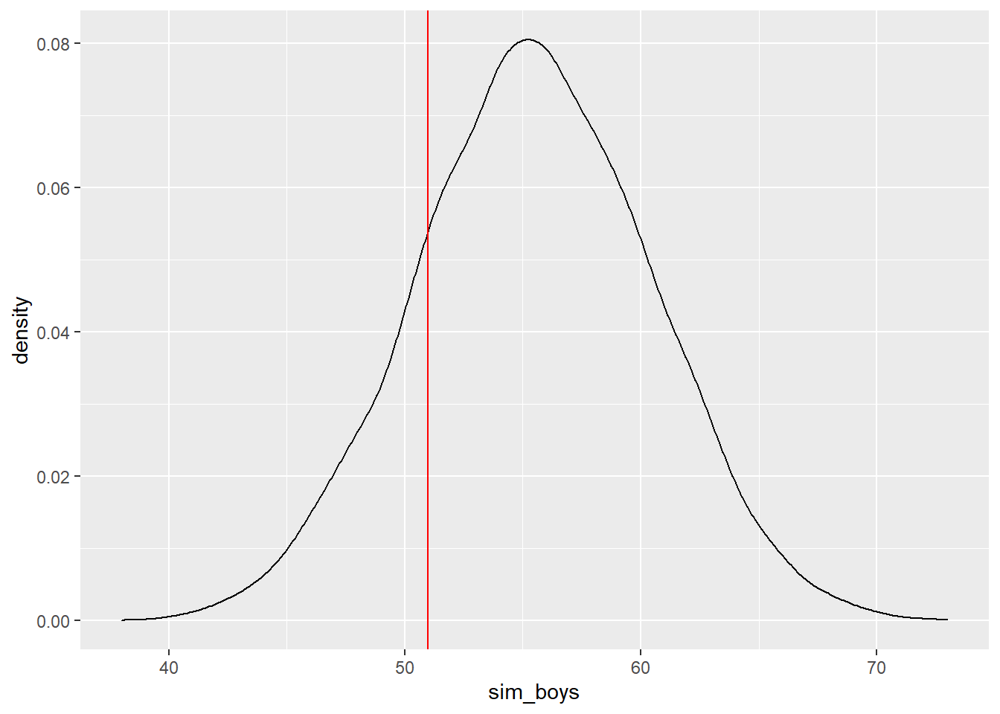
3H5
The model assumes that sex of first and second births are independent. To check this assumption, focus now on second births that followed female first borns. Compare 10,000 simulated counts of boys to only those second births that followed girls. To do this correctly, you need to count the number of first borns who were girls and simulate that many births, 10,000 times. Compare the counts of boys in your simulations to the actual observed count of boys following girls. How does the model look in this light? Any guesses what is going on in these data?
birth_after_girl <- birth2[birth1 == 0]
sim_boys <- rbinom(1e4, length(birth_after_girl), boyN / birthN)
ggplot(data=NULL, aes(x=sim_boys)) +
geom_density() +
geom_vline(xintercept = sum(birth_after_girl), color="red")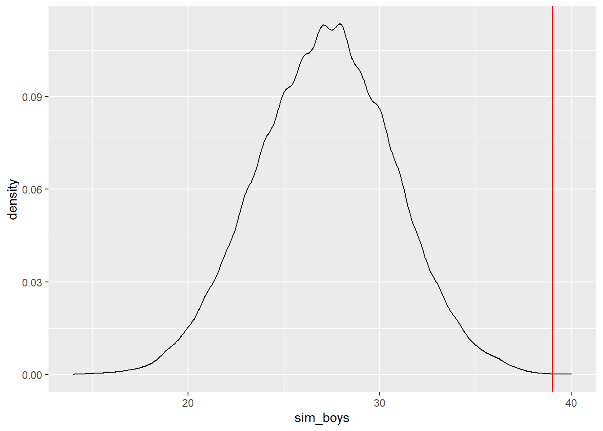